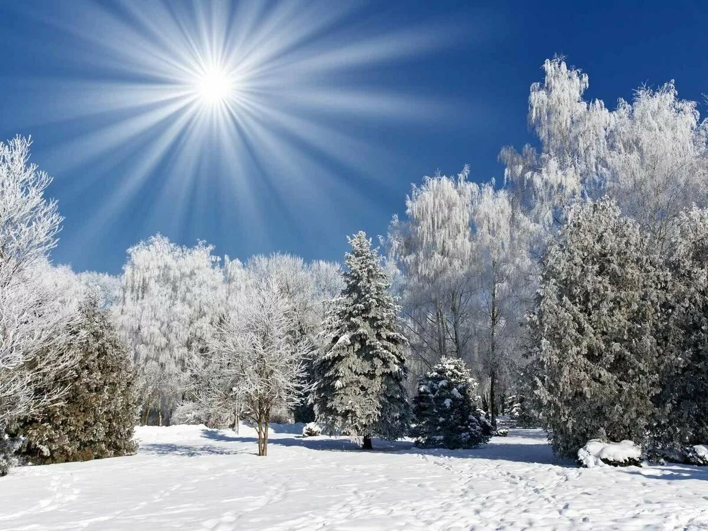

Пушкин
Александр Пушкин родился 26 мая (6 июня) 1799 года в небогатой дворянской
семье. Начальное образование, как это было принято у дворян, маленький
Пушкин получил дома, его обучением занимались учителя и гувернеры,
приглашаемые родителями из разных стран Европы. При этом, несмотря на
яркий ум, будущее светило русской поэзии никак нельзя было назвать
прилежным учеником, преподаватели и родные отмечали в нем отсутствие
усердия, но со временем мальчик увлекся чтением. Уже в возрасте семи лет в
Пушкине начал развиваться его творческий талант. Начитавшись Мольера,
Лафонтена и Вольтера, он сочинял на французском языке маленькие комедии,
басни и даже пытался написать поэму. (Источник информации - портал
История.РФ,
Лермонтов
ТАСС-ДОСЬЕ (Ирина Макоева). Михаил Юрьевич Лермонтов родился 15 октября
1814 г. (3 октября по старому стилю) в Москве в семье помещика, капитана в
отставке Юрия Петровича Лермонтова. По одной из версий, род Лермонтовых
происходил от шотландского рода Лермонтов, восходящего к поэту XIII века
Томасу Лермонту (в настоящее время британская компания Oxford Ancestors,
составляющая родословные, проводит работу по подтверждению данной версии
при помощи анализа ДНК). Мать Лермонтова - Мария Михайловна (урожденная
Арсеньева), умерла, когда сыну было три года. Детство будущего поэта
прошло в Тарханах (ныне с. Лермонтово Белинского района Пензенской
области), в усадьбе его бабушки Елизаветы Алексеевны Арсеньевой (в
девичестве Столыпиной).
Зима
